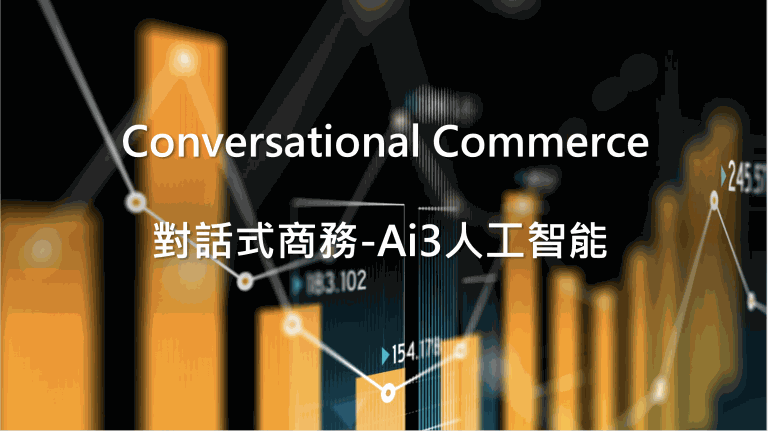

專欄文章
智能客服、對話式商務與數位轉型的觀點，共 35 篇。

想把數據發揮最大價值？關鍵兩大建設、四大制度
近年機器學習與深度學習模型發展成熟，AI技術與模型建立的環節中，資料佔據著重要的一環，從資料蒐集、儲存、存取…

中小企業打造美好客戶體驗，成功秘訣是[人機協作]
在2016年，Facebook宣布開放Messenger API之後，聊天機器人(ChatBot)的應用逐漸興起…

73%員工離職理由並不是實話！年後離職潮該怎麼應對
年節過後總是會出現一批領完年終轉職的員工，造成徵才上的困境…

各家企業的必需品!聊天機器人助你提升成交率的一臂之力!
從 2016 年開始，AI、機器學習、聊天機器人快速發展，導入的企業逐漸增加

中小企業打造美好客戶體驗，成功秘訣是[人機協作]
重視「體驗」與「服務」，持續提供良好客戶體驗，是各家企業的重點策略

「聊天機器人」成本高，真的有幫助？優勢、應用一次看懂
2016 年 Facebook 開放 Messenger API 之後，聊天機器人的應用逐漸興起

客戶服務更有效率！智能CRM系統幫助企業貼近顧客需求
從首次互動起逐步貼標，讓客服在對的時間點說對的話

多產業聊天機器人懶人包，一次了解各產業機器人應用
從 1996 年的 Eliza 到今天，各產業的聊天機器人應用一次看

以「人」為核心的金融產業 應用數位客服提升效率！
智能客服成為金融機構積極發展的熱點

交通諮詢數位化 由ai智能客服線上服務
疫情改變大眾運輸習慣，交通諮詢走向數位化

機器人也可以治療憂鬱症病患？由機器人擔任您的心理治療師
疫情下的焦慮與壓力，對話機器人在心理支持上的應用

疫情導致美妝門市營收下滑 如何透過線上銷售來提升業績
美妝產業用電商平台與智能機器人把營收拉回來

疫情衝擊觀光產業 觀光業能透過數位轉型帶動業績嗎？
住房率只剩一成，觀光業的數位轉型機會

餐飲業結合AI智能，機器人為疫後新時代賦能
餐飲業結合 AI 智能，為疫後新時代賦能

解密新商機：帶您開啟對話式商務領域導入新服務
什麼是對話式商務？透過對話讓企業提升營收

迎戰OMO！如何設計虛實融合的智能客服流程
新零售時代的 OMO，智能客服流程怎麼設計

對話式商務超進化｜結合OMO帶來新商機
對話式商務結合 OMO 的新商機

人資HR如何帶動內部服務的數位轉型｜從員工體驗到流程設計整合人資策略
從顧客體驗到員工體驗，人資的數位轉型

新時代人資4個招募技巧｜建立雇主品牌從提升員工滿意度開始
少子化下的人才招募與雇主品牌

客服系統 比較推薦懶人包｜如何選出心目中的Top1
怎麼挑到符合企業需求的客服系統

line chatbot、linebot有什麼不同？|一次了解機器人功能
一次了解 LINE 機器人功能

新零售服務時代｜打破時空界限，OMO結合智能服務的應用趨勢
零售從實體走向線上，OMO 結合智能服務

中小企業該怎麼運用聊天機器人開始轉型｜聊天機器人推薦
疫情下中小企業怎麼用聊天機器人開始轉型

人工智慧一大迷思：聊天機器人真的可以自我學習嗎？
聊天機器人真的這麼「智能」嗎？

科技不斷改變零售規則｜如何運用聊天機器人開啟對話式商務
用聊天機器人開啟對話式商務

智能客服是什麼？如何應用智能客服提供線上服務解決問題
智能客服是什麼、怎麼用在線上服務

對話式商務(行銷)將服務與銷售結合的最佳化-服務設計、流程
服務與銷售流程整合的服務設計

數位轉型攻略：如何應用線上智能客服｜物流篇
物流業怎麼用線上智能客服

面對疫情影響 中小企業如何快速數位轉型
宅經濟與遠距工作下的快速數位轉型

工業4.0製造業如何運用雲服務開始數位轉型
製造業用雲服務開始數位轉型

2022聊天機器人推薦比較|對話機器人(ChatBot)入門推薦
對話機器人入門推薦與比較

聊天機器人懶人包！30秒讓你認識拉近顧客關係的行銷工具
30 秒認識聊天機器人

對話式商務(對話式行銷)是什麼？企業服務、行銷、導購策略的全新服務設計思考
對話式商務的全新服務設計思考

「喂，1999你好！」AI客服大腦 六成由這家公司打造
經濟日報 2019/9/21 報導：1999 專線的 AI 客服大腦六成由 Ai3 打造

智慧客服核心大腦過半數來自這家公司
TVBS 2019/6/12 報導：智慧客服核心大腦過半數來自 Ai3
內文已從 ai3.cloud 現站轉入本站第三層頁面；圖片仍引用現站圖檔。